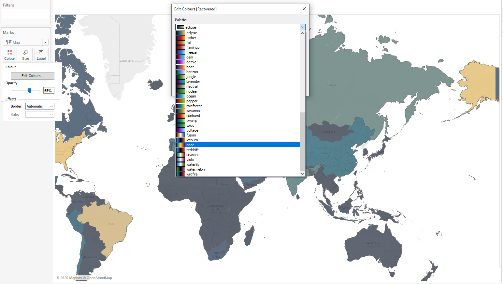

Tableau and Scientific colormaps
-
Here is a tutorial on how to export the scientific colormaps from the python package CMasher and import them into Tableau. CMasher ( Ellert van der Velden, 2020 ) is a python package with a collection of scientific colormaps which are designed to be perceptually uniform and most of them are color-vision deficiency friendly. Tableau is a powerful and interactive data visualization tool which is mostly used in the business industry.
Export colormaps
-
The following snippets of code can be used to export the colors from colormaps in HEX and tranform them into Tableau's style. The entire code (GitHub repository) can be found in this Jupyter Notebook: CMasher and Tableauand python script cmasher_tableau.py while the final Tableau preference file containing all colormaps can be found here Preferences.tps. Please see the CMasher documentation for more details, especially how to use it in Python and how to cite it.
# Import packages import cmasher as cmr
- Firstly we need to extract the names of all the colormaps and their type (whether they are sequential or diverging), using CMasher functions.
# Get colormaps cmr.cm.cmap_d.keys()
# Get type of the colormaps cmr.cm.cmap_cd.keys()
- Then we obtain all existing colormaps and their type:
# There are only sequential and diverging colormaps # We obtain names of colormaps using only those that do not end with '_r' since they are the reversed version of each colormap sequential_colormap = [y for y in cmr.cm.cmap_cd['sequential'] if not y.endswith('_r')] diverging_colormap = [y for y in cmr.cm.cmap_cd['diverging'] if not y.endswith('_r')]
- Finaly we export the HEX color code from each colormap, for both sequential and diverging type:
# Get the HEXZ values of each sequential colormaps # Export them in range of: 0.15 to 0.85 -> you can export the full range if you prefer. all_sequential_maps_hex = [] for colormap in sequential_colormap: cmp = cmr.take_cmap_colors('cmr.{}'.format(colormap), None, cmap_range=(0.15, 0.85), return_fmt='hex') all_sequential_maps_hex.append(cmp)
# Get the hex values of the diverging colormaps; in range 0.15 to 0.85 all_diverging_maps_hex = [] for colormap in diverging_colormap: cmp = cmr.take_cmap_colors('cmr.{}'.format(colormap), None, cmap_range=(0.15, 0.85), return_fmt='hex') all_diverging_maps_hex.append(cmp)
Format colormaps for Tableau
-
At this stage, we need to format our colormaps in order to match the Tableau Preference file's style. The following code snippets transform a given colormap into the required format.
# Get all the sequential colormaps in the format that is required in Tableau for i, hexes in enumerate(all_sequential_maps_hex): print('<color-palette name='+'"'+'{}'.format(sequential_colormap[i])+'" ' +'type="ordered-sequential">') for j, col in enumerate(hexes): print(' <color>'+'{}'.format(hexes[j])+'</color>') print('</color-palette>')
# Get all the diverging colormaps in the format that is required in Tableau for i, hexes in enumerate(all_diverging_maps_hex): print('<color-palette name='+'"'+'{}'.format(diverging_colormap[i])+'" ' +'type="ordered-diverging">') for j, col in enumerate(hexes): print(' <color>'+'{}'.format(hexes[j])+'</color>') print('</color-palette>')
Make Tableau Preference file with obtained colormaps
-
Our Tableau preference file should look like this:
<?xml version='1.0'?> <workbook> <preferences> PLACE HERE THE OUTPUTS FROM THE COLORMAPS </preferences> </workbook>
An example of Tableau preference file with one diverging and one sequential colormap
<?xml version='1.0'?> <workbook> <preferences> <color-palette name="Pride" type="ordered-diverging"> <color>#160E28</color> <color>#2A194D</color> <color>#2C2D6D</color> <color>#22467B</color> <color>#1E5C7E</color> <color>#2C707E</color> <color>#42827E</color> <color>#5A947D</color> <color>#73A679</color> <color>#94B86E</color> <color>#B9C85C</color> <color>#E2D740</color> <color>#F9CD1E</color> <color>#F7AD0D</color> <color>#F08F0F</color> <color>#E6711C</color> <color>#D7562A</color> <color>#C63D37</color> <color>#B12543</color> <color>#980E4E</color> <color>#7C0154</color> <color>#5B0B4C</color> <color>#3B1035</color> <color>#1F0A1A</color> </color-palette> <color-palette name="Rainforest" type="ordered-sequential"> <color>#33034A</color> <color>#3A0161</color> <color>#3E0374</color> <color>#3E1086</color> <color>#392291</color> <color>#313193</color> <color>#254091</color> <color>#194B8E</color> <color>#0C5589</color> <color>#035F84</color> <color>#016781</color> <color>#036F7E</color> <color>#07787A</color> <color>#0B7F77</color> <color>#118772</color> <color>#188E6D</color> <color>#239665</color> <color>#329E5B</color> <color>#41A550</color> <color>#55AB41</color> <color>#6CB02E</color> <color>#83B419</color> <color>#9DB602</color> <color>#B2B811</color> <color>#C6BB2E</color> <color>#D6BF4A</color> <color>#E1C361</color> <color>#EDC87D</color> </color-palette> </preferences> </workbook>
Tableau preferences file
-
Save the Preferences.tps file and place it into your Tableau folder My Tableau Repository (that can be found in e.g. Documents/My Tableau Repository), and you will have all colormaps.
-
Here is the link to the GitHub repository, entire Jupyter Notebook from this tutorial CMasher and Tableauand python script cmasher_tableau.py while Preferences.tps file contains all colormaps from CMasher version '1.5.0'. To be noted, this preference file contains colormaps with range (0.15, 0.85), if you want the full range you will need to change that part of the code to (0, 1) and create new preference file.
Colormaps will appear in Tableau
References
-
CMasher ( Ellert van der Velden, 2020 )
- Code snippet HTML formatting was done with the use of hilite.me